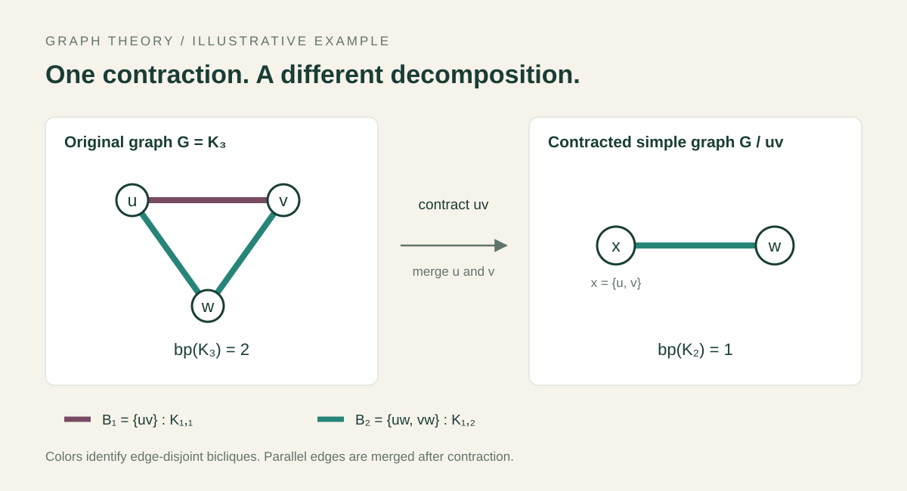

GRAPH THEORY
Edge contraction & biclique decomposition.
During the Graph Decomposition & Word Avoidance concentration at Pioneer Academics, I investigated the relationship between edge contraction and biclique decompositions.

The question
How does contracting an edge affect the minimum number of complete bipartite graphs needed to decompose a graph?
My work
- Conducted independent research on graph theory, focusing on biclique decompositions and edge contraction.
- Examined how this graph operation changes the decomposition problem.
Research output
I wrote a research paper on my findings as part of the program.
Methods & tools
Graph theory · Biclique decomposition · Edge contraction